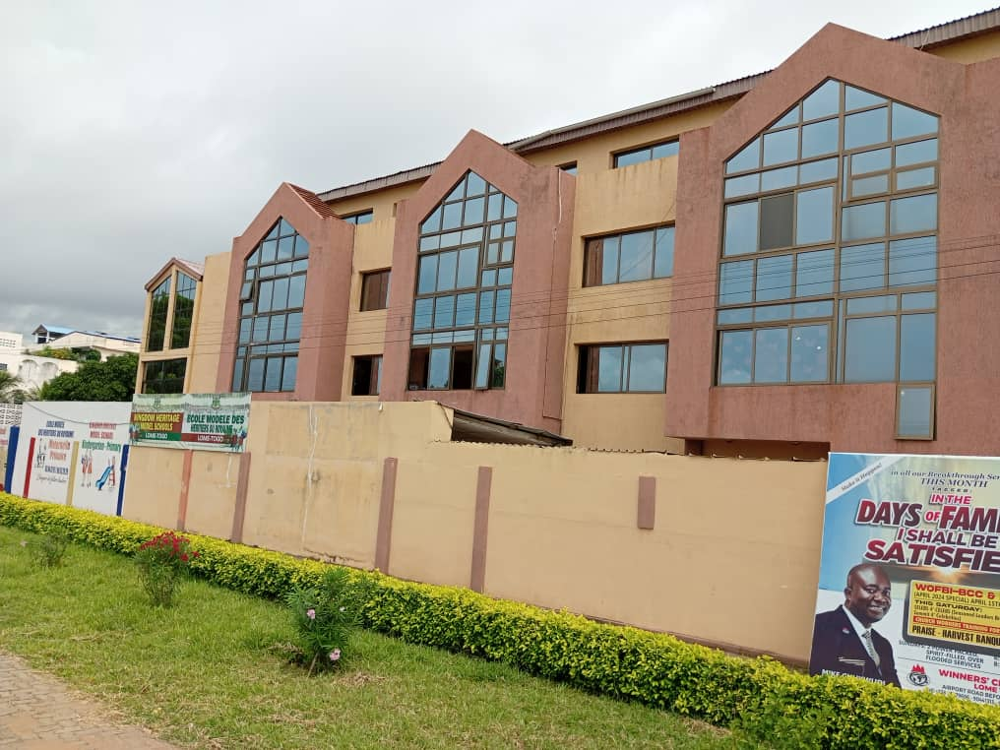
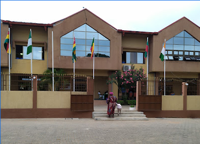

Pastor Michael CHUKWUDI Ikechukwu
National Resident Pastor
Our Mandate for ministry was received from God in an 18-hour vision to the presiding Bishop of this commission, Bishop David O Oyedapo. During this vision, a commission was received from God to liberate mankind in all facets of human existence, to restore broken destinies, to bring healing to the infirmed.
This mandate was further confirmed from the epistle of Paul to the Ephesians where God Said, “Above all, taking the shield of faith, wherewith ye shall be able to quench all the fiery darts of the wicked” (Eph 6:16). This was the genesis of this global ministry today and according to this mandate, the Word of Faith is the key to triumphant living.
This commission worldwide has stood firm upon the twelve stones below and they have resulted in breakthroughs – both for the ministry and all that are partakers of the same grace with us.
This mandate was further confirmed from the epistle of Paul to the Ephesians where God Said, “Above all, taking the shield of faith, wherewith ye shall be able to quench all the fiery darts of the wicked” (Eph 6:16). This was the genesis of this global ministry today and according to this mandate, the Word of Faith is the key to triumphant living.
This commission worldwide has stood firm upon the twelve stones below and they have resulted in breakthroughs – both for the ministry and all that are partakers of the same grace with us.
Bishop David Olaniyi OYEDEPO
President of LFCW
Faith
The Word
The Supernatural
Praise
The Holy Spirit
Prosperity
Vision
Prayer
Healing
Wisdom
Consecration
Success


